Season One · Fall 2026 · on YouTube
The Middle of Everything
Twelve-year-old Chris Vale can fall into anything they look at closely enough, and gets thrown straight back out the moment they're sure.
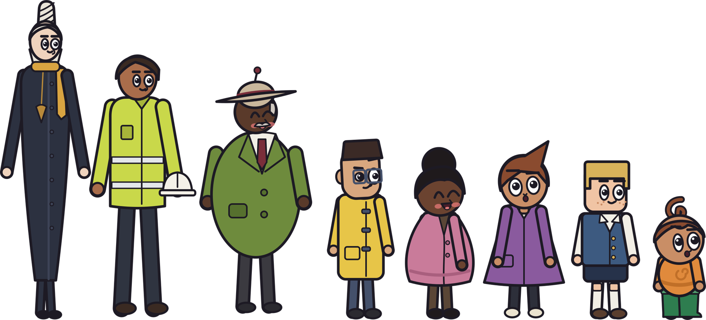
Look closer. Then look again.
Halfway is a small town that proudly believes it sits halfway between all things. Twelve-year-old Chris Vale knows better, because Chris can fall into anything they look at closely enough: a city of bacteria in a crack in the school steps, a water flea in a jar of canal water, the halftone dots of an old photo, a scraped knee that turns out to be a cathedral. The rule is simple and annoying. Look openly and you fall in. Decide too early that you already know what something is, and you're snapped straight back out. Chris loves being surprised and hates being wrong, which makes this a problem.
Around Chris: Ori, a best friend who measures everything and believes nothing without checking; Pim, a younger sibling who sees patterns everywhere and is occasionally right; Hollis, who cites rule numbers in impossible situations; Wendell, the weatherman the town loves because he's reliably wrong; and Rosa, an engineer mum who answers wonder in her driest voice. And there's Surveyor Augusta Plumb, who is very polite, and whose labels are making parts of Halfway quietly go flat.
Ten episodes of deadpan family comedy, tiny worlds and honest science, with a mystery that runs the whole season and a question at the end of every episode: who picked the ends?
Look openly
Pay real attention to anything (a crack, a puddle, an old photo) and Chris falls in, down to its scale.
Decide too early
The moment Chris is sure what something is, the Snap throws them straight back out.
Check the ruler
Every fall shows a scale ruler with a true order of magnitude. Real science is stated plainly; the show's own rules are labelled.
Season One
Ten episodes, one mystery: why is Halfway losing its detail?
-
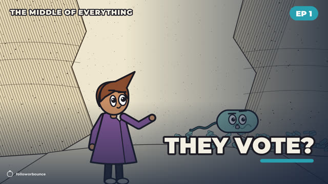
Episode 1 Halfway Between All Things 10 min -
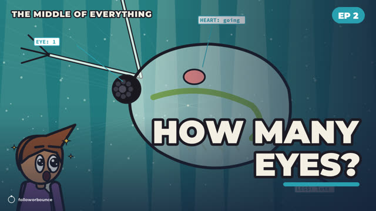
Episode 2 Step Out 10 min -
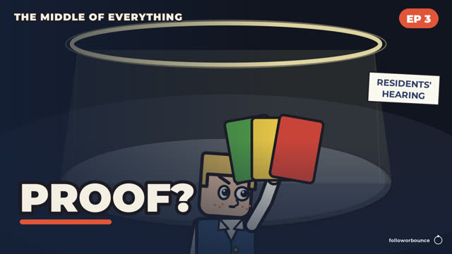
Episode 3 The Witnesses 9 min -
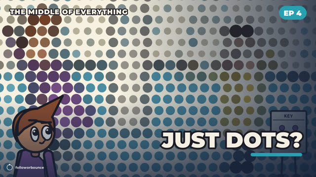
Episode 4 Ori's Version 9 min -
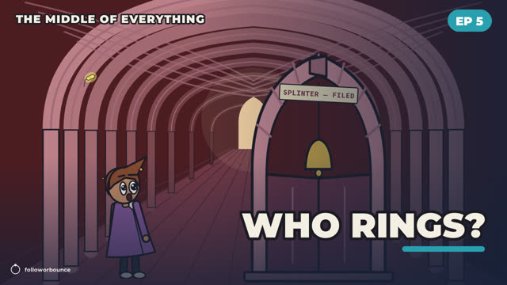
Episode 5 Cathedral 9 min -
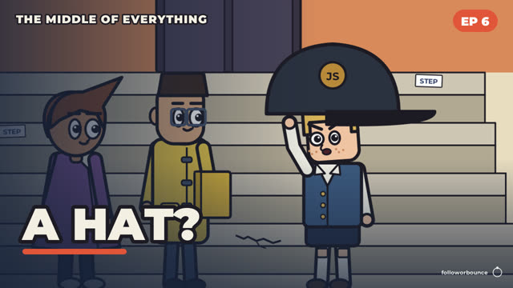
Episode 6 Pim's Wall 8 min -
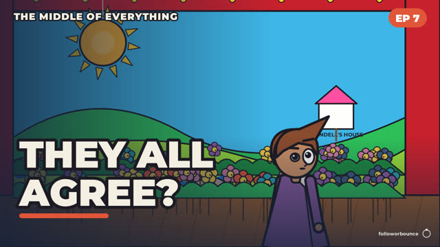
Episode 7 The Garden That Could Say No 10 min -
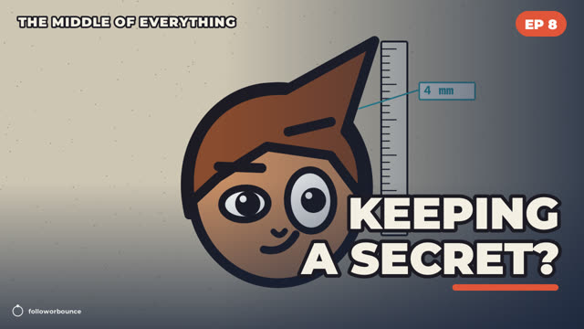
Episode 8 Crossroads 9 min -
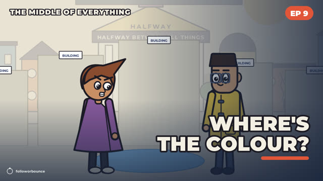
Episode 9 The Complete Label 9 min -
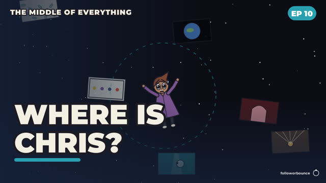
Episode 10 Who Picked the Ends? 10 min
Who's who in Halfway
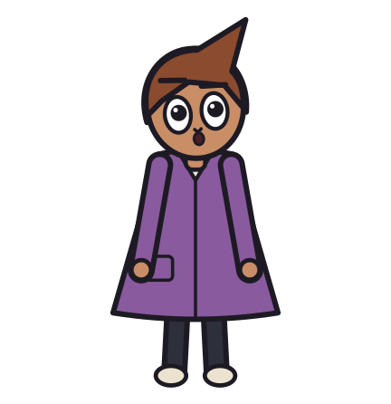
Chris Vale
Twelve. Can fall into anything they look at closely enough. Loves being surprised, hates being wrong, which is a problem.
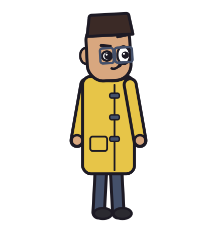
Ori Adler
Chris's best friend. Measures everything, records it on a cracked phone, believes nothing without checking.
-
June Abara
Thirteen, school drama club. Notices how people feel and why they say what they say.
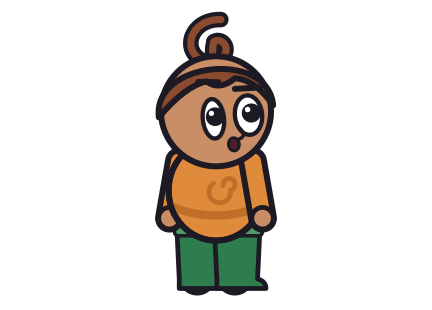
Pim Vale
Chris's younger sibling. Sees faces in sockets and codes in cracks. Mostly wrong. Occasionally devastatingly right.
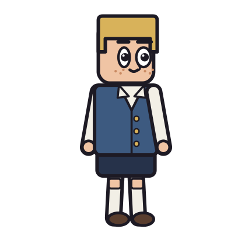
Hollis Pratt
Class monitor with a laminated binder of rules, quoted by number, in impossible situations.
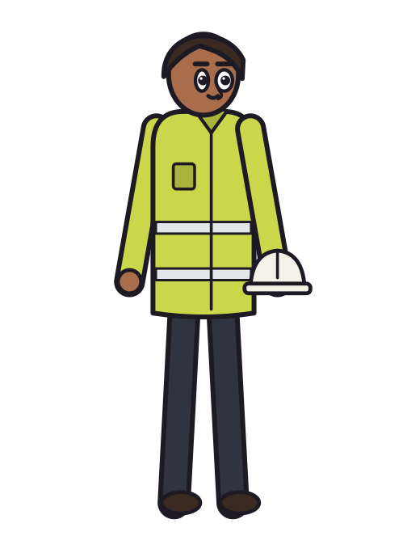
Rosa Vale
Engineer, mum, night shifts at the water works. Answers wonder in her driest voice.
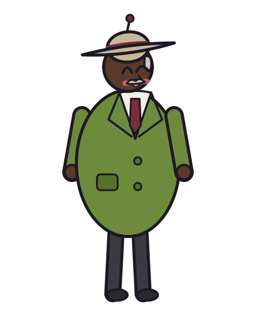
Wendell Pryce
Halfway's beloved weatherman. Charming, knowledgeable, and reliably wrong.
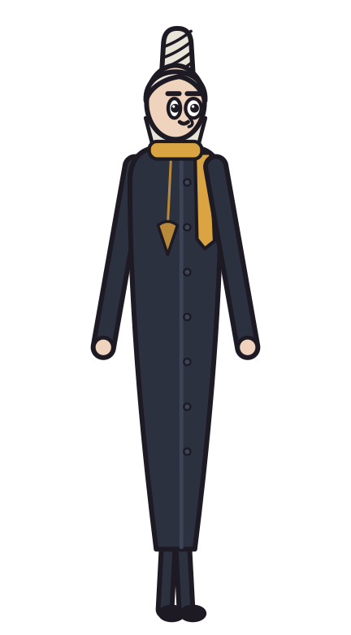
Surveyor Augusta Plumb
Head of the Survey Office. Very polite. And the office's labels are making parts of Halfway quietly go flat.

Did you spot Ninety-One?
Ninety-One is the last member of the Quorum to vote, and the season's tiniest hider. In every episode it turns up once, somewhere in the picture. The answer is at the end of each episode, after the story.
For grown-ups
Honest science
Real facts are stated plainly and checked: quorum sensing, water fleas, ice expansion, how many bacteria live in a body. Falling In and the Snap are the show's own rules, and the episodes say so.
Questions, not morals
Episodes end on a better question rather than a lesson. Adults are sometimes wrong, never stupid. Beliefs are shown as beliefs.
Watch together
A deadpan family comedy for curious viewers, with no violence and no bad language. Every episode ends in the Vale kitchen: Be weird. Be safe. Be home by six.
What each episode is about
- 1. Halfway Between All Things
- About jumping to conclusions: Chris learns that a city of bacteria can't be argued into moving, and the episode introduces quorum sensing and a playful “middle of all scales” sum that depends on which ends you pick.
- 2. Step Out
- About knowing enough to commit: Chris runs a fair test (one fact, then a check under a real microscope), learns a water flea has one eye, and is grounded for staying out until 9:44 PM.
- 3. The Witnesses
- About the difference between what you saw, what you think and what you feel about someone, told through a neighbours' dispute over a broken birdbath; it touches gently on an older neighbour's grief, and Chris is grounded for being on a roof.
- 4. Ori's Version
- About whether memory is a recording: two best friends disagree about how they met, and the episode shows, gently and with a real study, how retelling a story can change it.
- 5. Cathedral
- About where your body stops and the world starts: a neighbour minds a feverish Pim overnight, Chris imagines the healing knee as a cathedral, and Ori corrects a popular myth on screen (bacteria and human cells are roughly one to one).
- 6. Pim's Wall
- About patterns, coincidence and hidden causes (correlation is not causation), with clear everyday examples; Chris is dismissive of their younger sibling here, on purpose, and the repair is only partial by the end.
- 7. The Garden That Could Say No
- About why love has to be free to mean anything, around a family friend's recovery from heart bypass surgery: a churchgoer, a non-believer and a friend whose grandad reads the Book of Job each give their own answer as belief, not fact, and nobody's illness is anyone's fault.
- 8. Crossroads
- About keeping a promise when it hurts other people, with real navigation history (Polaris, longitude and time) and crossroads traditions from Greek and Roman, Yoruba and Japanese culture, each kept separate and named for its own culture.
- 9. The Complete Label
- Part one of the finale and the season's most unsettling episode: the town is labelled flat, Chris is left unreachable, and it ends on a cliffhanger with no comfort beat, so plan to watch Part 2 soon after.
- 10. Who Picked the Ends?
- The finale: a friend's specific, true description brings Chris back, the whole town looks closely at one thing for a minute, and the “middle of everything” turns out to depend on who picked the ends.